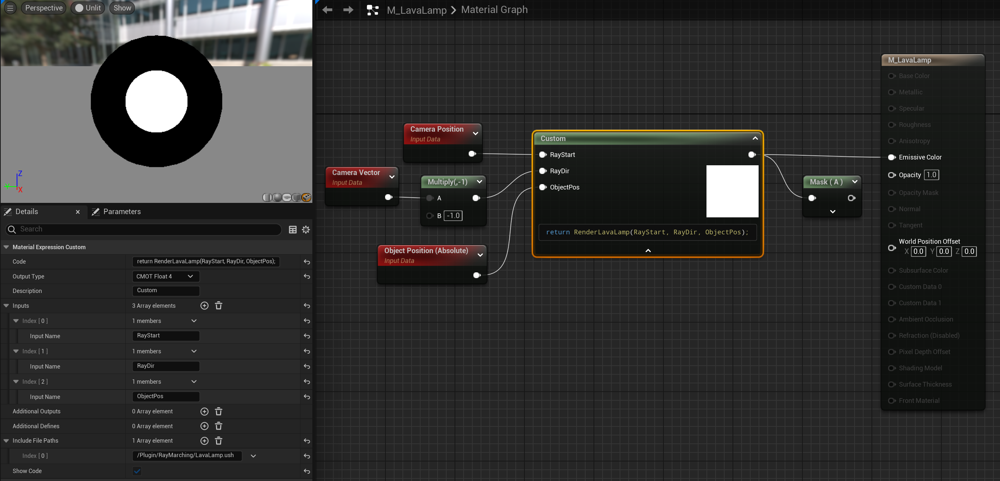
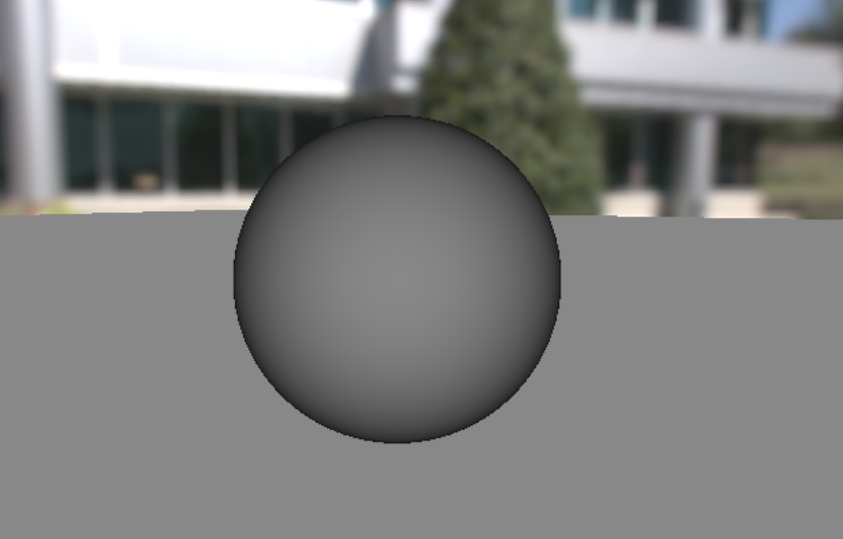

Ray Marching a Lava Lamp in Unreal Engine
Start Up
I assume you have prior knowledge about Ray Marching and Unreal Engine Shader Files. If it is not the case you can look at my previous posts on these topics :
- Introduction of Ray Marching in Unreal Engine
- Moving Material Custom Node HLSL to Shader Files.
Creating Ray Marching Library Header
Add Unreal Shader Header File RayMarchingLibrary.ush to the project. I will use this file for reusable functions and structures like SDFs, math tools, or rendering utilities.
Let's start with sphere SDF. Here I chose to encapsulate the SDF into a struct for future reuse but it is not required. We should also include Platform.ush as it is mandatory. I also include Common.ush as it will be helpful later on.
#pragma once
#include "/Engine/Public/Platform.ush"
#include "/Engine/Private/Common.ush"
struct SDF
{
static float Sphere(float3 pos, float radius)
{
return length(pos) - radius;
}
};
Creating Lava Lamp Header
Add Unreal Shader Format File LavaLamp.ush to the project. I will use it for the main rendering loop of the lava lamp. I have decided to split up the lava lamp in a separate file so we the library stays clean and reusable.
Depending on your need, each parameter can be declared from the code or exposed it as a parameter in your material. Some parameters like the camera position, camera vector or time are simple to get from the material but might be more difficult to get from HLSL. These values usually comes from Common.ush or the MaterialParameters structure. I personally chose to expose all values that are not trivial to retrieve from HLSL for simplicity.
#pragma once
#include "./RayMarchingLibrary.ush"
#define DIST_THRESHOLD 0.1f
#define ITER_MAX 128
float4 RenderLavaLamp(float3 RayStart, float3 RayDir, float3 ObjectPos)
{
float TotalDistance = 0;
for(int i = 0; i < ITER_MAX; i++)
{
// Ray Sampling
float3 RayPos = RayStart + RayDir * TotalDistance;
// Ray relative to lava lamp
float3 Pos = RayPos - ObjectPos;
// SDF
float Dist = SDF::Sphere(Pos, 25.0f);
// Surface is close enough
if(Dist < DIST_THRESHOLD)
{
return float4(1.0f, 1.0f, 1.0f, 1.0f);
}
// Adaptive distance for next step
TotalDistance += Dist;
}
return float4(0.0f, 0.0f, 0.0f, 0.0f);
}
Here we don't need to include Platform.ush because it is indirectly included through the library.
Creating Lava Lamp Material
Create an unlit translucent material M_LavaLamp and set the preview window to unlit for consistency. Add a Custom Node that includes LavaLamp.ush using your virtual path and returns RenderLavaLamp().

As we took Object World Position into account you should have the same result anywhere in a map.
Lava Lamp Geometry
First Render
Now that we have a ray marching renderer we need to get a sens of depth in order to work on the geometry.
As a simple fix we can use the ray total distance from the camera to create a fresnel effect. This should be enough to get a sens of the shapes while working on geometry.
// Computes relative distance to object position
float RelativeDist = TotalDistance + Dist - distance(RayStart, ObjectPos);
// Scale the range of grayscale values
// Unreal unit sphere of radius 50 is now in the range [-1;+1]
float ScaledRelativeDist = RelativeDist / 50.0f;
// Create fresnel effect, ensure positive values, and clamp result
float Grayscale = clamp(Pow2(ScaledRelativeDist), 0, 1);
// Return as float4
return float4(Grayscale, Grayscale, Grayscale, 1.0f);

Generating Random Numbers
In order to work on our geometry we need deterministic random number generator. In HLSL there is no built-in random function so the common technic is to use hash functions.
These function typically take one or multiple float as an input and output a pseudo random number from it. This mean that if we feed the same input we get the same output. One typical input is to use UV coordinate random numbers are deterministic pixel wise. In our case we are going to generate hash input manually.
// using float input
float Rand(float x)
{
return frac(sin(x) * 43758.5453123);
}
// using integer input
float RandFromInt(int x)
{
uint n = asuint(x);
n = (n << 13) ^ n;
return frac((n * (n * n * 15731u + 789221u) + 1376312589u) * (1.0 / 4294967296.0));
}
First Geometry
In order to work on the geometry I start to add some functions into the library SDF structure.
// In SDF struct
static float Cylinder(float3 p, float h, float r)
{
float2 d = abs(float2(length(p.xy), p.z)) - float2(r, h);
return min(max(d.x, d.y), 0.0) + length(max(d, 0.0));
}
static float OpSmoothUnion(float d1, float d2, float k)
{
float h = max(k - abs(d1 - d2), 0.0f);
return min(d1, d2) - h * h * 0.25 / k;
}
static float OpSmoothIntersection(float d1, float d2, float k)
{
float h = clamp(0.5 - 0.5 * (d2 - d1) / k, 0.0, 1.0);
return lerp(d2, d1, h) + k * h * (1.0 - h);
}
Then I add time to RenderLavaLamp method and bind it to Time in the material.
Then I wrapped SDF computation in a method GetScene and I replace the sphere by it in the main loop.
Now that everything is in place we can start playing